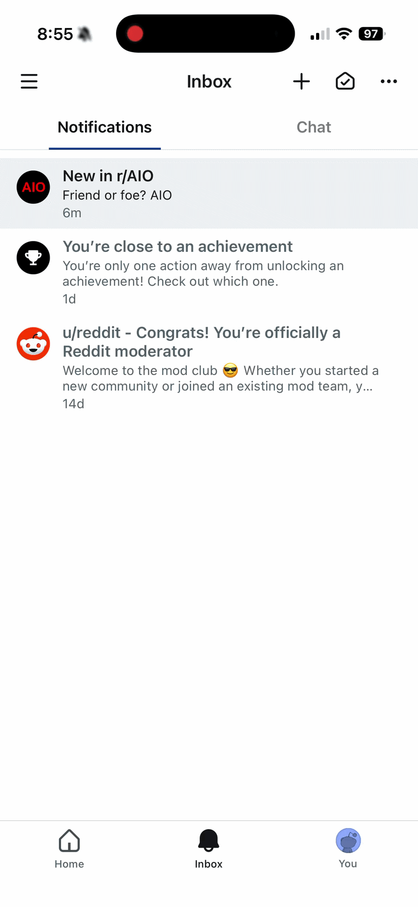

Notifications & Inbox
Transforming fragmented surfaces into a unified system
Reddit’s communication systems — Chat, Messages, and Notifications — reached hundreds of millions of users every day, but were fragmented across surfaces with no shared architecture. The result was an inbox experience that didn’t behave the way users expected.
I built a user segmentation framework, defined the inbox vision, and led the move toward a unified engagement system. Through working prototypes and user testing, our team turned abstract debates into evidence-backed product decisions.
User messaging hadn’t evolved with the product
Reddit’s messaging surfaces had drifted across four disconnected systems and three platforms. The experience was off the design system, hard to scale, and difficult to experiment with — and it hadn’t had a dedicated design pass in six years.
Beyond the visual fragmentation, there was no overarching user strategy: limited inventory, limited controls, and no clear prioritization model. Push notifications, inbox, private messages, and chat operated independently, each with its own content type and architecture.
Messaging had to serve three very different users
Each user cohort had different experiences with updates and the inbox. New users saw an empty state, casual users lacked control over what they saw, and core users struggled to find what mattered.
The strategy had to serve all three without creating tradeoffs: help new users get started, give casual users more control, and help core users prioritize high-signal activity.
The inbox drove engagement, but was underleveraged
Users engaged when inbox content felt personally actionable — tied to something they posted, joined, or cared about. That made the inbox a high-intent contribution surface, not a passive discovery surface.
Millions of users entered the inbox each day, nearly half clicked through, and most clickers contributed. But the funnel was dominated by core users; casual and new users rarely made it past the first step.
Strategy
The path forward had two phases — build a foundation that could scale across the disparate surfaces — then use it to learn what users actually needed from a messaging system.
- Establish a scalable foundation
- Optimize for key user journeys
First: establish a scalable foundation
Standardize the messaging row
Inbox, Messages, and Chat were all off Reddit’s design system, so each new type required custom engineering work. That made the system harder to scale, test, and maintain.
I designed a reusable messaging row in collaboration with our Design System team that could flex across notifications, private messages, and chat previews — creating a shared design-system foundation for all three surfaces.
Enable gestures for secondary actions
The row was carrying too much UI: type icons, overflow menus, and segmented sections that pushed content down the page. Icons had low comprehension, while overflow menus made secondary actions harder to reach.
I moved secondary actions into swipe and long-press gestures, replaced icons with clear embedded copy, and freed the trailing slot for flexible content. Swipe tested as the more intuitive gesture, with engagement holding steady.
Make unread states obvious, not noisy
Before, numbered badges appeared everywhere. Users had to compare counts across entry points, tabs, and rows to understand what was new and where to find it.
I simplified the system: one count at the inbox level, one dot at the tab level, and clear unread styling at the row level. Each signal did one job — count, locate, or identify — so users always knew what to do next.
v1 → v2
Badge noise created confusion → progressive disclosure clarified the hierarchy → migration reduced unread contrast → CTR dropped → data revealed the cause → v2 restored contrast → updated pattern scaled beyond inbox.
Next: optimize for key user journeys
Establish a framework for deciding what to show
We used two axes to guide prioritization: signal — what Reddit knew about the user — and intent — what the user was trying to do. Together, they helped us identify what each cohort needed from the inbox and which notification types were worth prioritizing.
Internal data showed the inbox was a meaningful contribution driver, but the value was concentrated in flows that already worked for core users. Instead of disrupting those high-risk surfaces first, we focused on new users and subreddit-following moments, where empty inboxes created room for net-new engagement.
Three pillars for growing engagement
We translated the strategy into three pillars: build habits, enable curation, and create focus. Together, they turned the inbox from a fragmented notification feed into a system for driving higher-quality engagement.
1. Build Habits
Explain why every notification appears
Contextual framing turned generic updates into personally actionable moments.
Users were more likely to engage when a notification connected to something they had done — a subreddit they joined, a post they viewed, or a community they cared about.
I replaced generic copy with contextual framing that explained why each notification appeared. Click-through doubled compared to generic framing, and the system could support higher volume without feeling random or overwhelming.
I also shipped decay logic for lower-signal notification types: if a user repeatedly ignored a type, the system could ask whether to turn it off. I partnered with ML to tune thresholds while I defined the user-facing behavior.
Restore continuity across push and inbox
Users expected a communication history, not a rotating latest item.
Before, every new push recommendation replaced the last one in the inbox. That erased useful context and cut off discovery flows mid-stream.
I restored recommendation history so users could return to earlier suggestions, compare options, and continue discovery after the push moment passed. The fix lifted push good visits by +1% across the full send volume.
2. Enable Curation
Separate what users asked for from what we recommend
Subscribed updates should not compete with algorithmic recommendations.
Before, subscribed updates and recommendations flowed through the same ranking system. That meant something a user explicitly asked for could be buried beneath a high-performing recommendation.
I partnered with the ML team to separate the pipeline: subscribed updates became a direct user-signal path, while recommendations stayed ranked by predicted engagement. That let the system respect explicit preferences while still surfacing discovery content.
Replace vague controls with concrete choices
Vague labels like Off, Low, and Frequent described system behavior, not user outcomes.
That left users unable to predict what would show up in their inbox.
I worked with engineering to replace frequency labels with concrete choices: no updates, popular posts, and all new posts. The new model made preferences easier to understand, easier to implement, and easier to surface directly on the subreddit page.
Put preferences at the point of decision
Notification controls belonged where users chose to join.
Before, users joined a subreddit without a clear way to control what they would receive from it. Alert settings were buried several screens deep, so the subscription decision and notification decision were disconnected.
I moved the control onto the subreddit page itself, making preferences visible at the moment users chose to follow a community.
Compound signal over time
Relevant notifications create engagement; engagement improves relevance.
With the taxonomy in place, the inbox could become a feedback loop. We used what Reddit already knew about a user to deliver more relevant updates, then used engagement behavior to refine what the system showed next.
The result was a shift from static notification feed to adaptive engagement system.
3. Create Focus
Simplify mental models
Inbox, Messages, and Chat looked related, but each had different rules for sorting, engagement, navigation, and actions.
To consolidate them into one system, I had to preserve the behavior users expected from each surface. Inbox was a chronological destination for async updates. Private Messages were async threads sorted by recency. Chat was a live conversation surface with filters, creation, and thread utilities.
Private messages overlapped with both notifications and chat — system updates and community alerts belonged in notifications, while user-to-user threads belonged in chat. Migrating private messages out collapsed three mental models into two.
The work required more than visual consistency: it meant defining a shared structure that could flex across different mental models without breaking any of them.
Use tabs for fast scanning
To support each mental model, the inbox had to work like a switchboard: help users scan quickly, choose the right surface, act, and leave.
I tested three layouts: chronological, nested, and tabbed. Chronological was simplest, but buried priority items under noise. Nested grouped related activity, but added cognitive load. Tabs gave each surface a clear place, so users could ignore what they didn’t need and go straight to what mattered.
Tabbed layout won on scan speed and mental model clarity.
Consolidate five tabs to three
One unified inbox reduced navigation clutter and opened space for product experimentation.
Before, communication was split across separate bottom-nav destinations. Consolidating Notifications, Messages, and Chat into one inbox preserved access while freeing a high-value nav slot.
That space was strategic: it let Reddit simplify the app structure, test new surface models, and give other teams room to experiment without adding more navigation complexity.
The result: one inbox, two tabs (Notifications + Chat), all messaging consolidated. The mental model is finally what users expected from the start—a single source of truth where every kind of communication lands and every kind of action is one tap away.
Outcome: four surfaces → one scalable system
The unified inbox became a shared foundation for messaging, notification design, and navigation experimentation across Reddit.
The work consolidated fragmented communication surfaces, established reusable design-system patterns, and clarified how different message types should behave. Beyond the inbox itself, it simplified app navigation and unblocked experiments in product surfaces that previously had nowhere to live.

Unified and scalable messaging surface
Outcomes
Material DAU lift
Sustained engagement gains across the notification and inbox ecosystem.
Quality visits increased
More high-intent visits attributable to push and inbox channels.
CTR improved
Contextualized push increased click-through across cohorts.
Exceeded annual goals
Notifications work outperformed team engagement targets.
1 nav slot freed
Unblocked navigation experiments across teams.